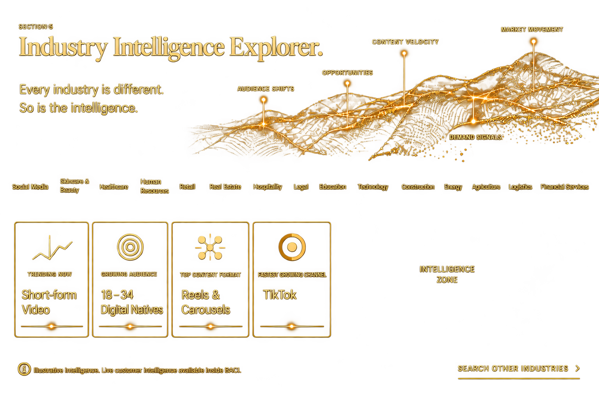

Discover
Modes
Solutions
Insights
Access
Search industries
Discover
Modes
Solutions
Insights
Access
Search industries
The future of growth
Global reach
Infinite intelligence
A system that evolves, analyses,
optimises and grows your business.
Analysing
signals in real time
Business Pattern
+1,338,884
Confidence 92.7%
Conversion Probability
87.6%
Audience Cluster
M.23 | High intent
Value score 81.3
Content Optimisation
Variant 1A7
Performance +24.6%
Channel Opportunity
Discord | Organic
Growth score 78.4
Market Shift Detected
Health & wellness
Trend velocity +41%
Intelligence Engine
67 / 70 active
Predictive Outcome
LTV +32.4%
The Reality.
BACI was built to see what others miss, and turn those signals into decisions while they still matter.
What if growth was intelligent, predictive and always one step ahead?
Introducing
Businesses today hold more information than they’ve ever had and less certainty about market direction and growth opportunities. The signals are there. The intelligence is fragmented.
BACI closes that gap.
Not another dashboard. Not another tool. One intelligence system for the work that actually moves a business forward, finding the audiences and partners most likely to convert, writing the bids that win, identifying the markets worth entering, connecting you to the capital that fuels what comes next.
It turns attention into conversion, and conversion into revenue that compounds.
The organisations that lead the next decade won't be the ones with the most data. They'll be the ones with the clearest intelligence.
BACI exists to help you become one of them.
118 Languages

BACI reads signals across 181 countries, hundreds of sectors and over 118 languages at once, surfacing the markets worth entering before your competitors even know they exist.
It doesn't stop at markets. It finds the investors, funders and resources within them, the capital most businesses never know exists because no one ever told them where to look.
No time zone slows it down. No language limits what it sees. No border defines where your next opportunity, or your next investor, comes from.
One system. Every market. Every resource. Always searching.
Growth was never meant to stop at a border. Neither does BACI.
181 Countries
Every industry is different. So is the intelligence.
Retail doesn't move like healthcare. Construction doesn't move like finance.
Yet most systems give every business the same generic view, the same dashboards and the same advice, regardless of what actually drives their market.
BACI doesn't work that way.
Industry intelligence is delivered in real time, specific to the market you're in and current to the moment you need it.
Not last quarter's report. Not a template. Intelligence for your industry, happening now.

Search other industriesWhat are you looking to achieve?
Where?
Select country
Healthcare focus
 Many Capabilities
Many CapabilitiesPlan. Decide. Execute. Evolve.
Running a business means making decisions across every part of it.
Strategy · Finance · Marketing · Growth · Funding · Procurement · Markets · Execution
Intelligence tells you what is happening. Business OS lets you decide what happens next.
BACI brings them together, where plans are informed by intelligence, decisions are connected to action and every result strengthens what comes next.
Your business doesn't operate in silos. Neither should your intelligence.
Every part of your business. One intelligence system.
Define. Structure. Direct. Build.
BACI transforms strategic intent into an executable business plan. It brings together market conditions, competitive dynamics, operating priorities, financial assumptions and growth objectives to establish what the business should do, why it should do it and what must happen next. As conditions change, the plan evolves with them. Strategy, resources and execution stay aligned throughout.
Model. Control. Allocate. Grow.
BACI connects financial planning to the conditions actually shaping the business. It models revenue, cost, cash, capital requirements and performance under multiple scenarios, while incorporating market and operational signals that can change those assumptions. Leaders can weigh trade-offs, allocate capital and act with a clearer view of financial consequence.
Position. Target. Launch. Convert.
BACI turns marketing from a calendar of activity into a commercially accountable growth system. It connects market demand, audience behaviour, competitive positioning, channel economics and conversion performance to determine where to compete, whom to target, how to position and where investment is most likely to produce return.
Source. Vet. Negotiate. Secure.
BACI provides intelligence across the procurement lifecycle: from identifying requirements and sourcing opportunities to supplier assessment, commercial evaluation and award decisions. It analyses supplier capability, pricing, market conditions, risk and alternatives so procurement decisions can balance cost, resilience, quality and strategic value rather than price alone.
Discover. Match. Apply. Win.
BACI continuously identifies grant opportunities and evaluates them against the organisation's eligibility, objectives, geography, sector and funding requirements. It prioritises the opportunities worth pursuing, surfaces requirements and deadlines, and supports the evidence and positioning needed to build stronger applications. This reduces effort spent on funding the organisation is unlikely to secure.
Assess. Structure. Position. Scale.
BACI determines what capital the business requires, when it requires it and which sources are most appropriate. It evaluates funding structures, capital requirements, business readiness, market conditions and strategic objectives to help decision-makers determine whether to raise, borrow, partner, restructure or deploy existing capital, and how to position the business for that decision.
Identify. Engage. Pitch. Close.
BACI identifies investors whose mandate, geography, sector, investment stage and capital profile align with the business. It goes beyond producing a list of names by assessing strategic fit, investment relevance and approach priorities, helping teams focus engagement on the investors most likely to understand the opportunity and have the capacity to act.
Research. Validate. Enter. Capture.
BACI evaluates whether, where and how the business should enter a new market. It brings together demand, competition, regulation, pricing, distribution, operating requirements, partners, customer behaviour and entry risk to compare opportunities and determine the most viable route to market. Expansion becomes an evidence-led capital decision rather than a geographic assumption.
Analyse. Prioritise. Expand. Compound.
BACI identifies where the next material sources of growth can come from and what is required to capture them. It evaluates customers, products, markets, channels, partnerships, competitors and operating capacity to distinguish sustainable opportunities from incremental activity. The growth paths with the strongest strategic and economic case rise to the top for prioritisation.
Track. Model. Predict. Adapt.
BACI converts current signals into forward-looking decision intelligence. It combines historical performance with market, competitive, financial and operational indicators to model likely outcomes, alternative scenarios and emerging deviations. Forecasts are continuously recalibrated as conditions change, giving decision-makers earlier visibility into what may happen and more time to respond.
Monitor. Synthesise. Decide. Lead.
BACI brings the signals that matter across the organisation into a decision-level view for leadership. It synthesises financial, commercial, operational, market and competitive intelligence to surface material changes, dependencies, risks and opportunities. This reduces the distance between what is happening in the business and the decisions executives need to make.
Design. Schedule. Launch. Measure.
BACI converts a commercial proposition into a coordinated route to market. It connects customer selection, positioning, pricing, channels, distribution, campaign activity, sales readiness and performance measurement into a single execution framework. This shows not only how the business intends to enter the market, but whether the strategy is gaining traction and where intervention is required.
BACI transforms information into intelligence you can use right now.
Because more information was never the answer. Knowing what to do with it is.
BACI surfaces the signals that actually affect your business, cutting through the noise so you can see where to focus and when to act.
Less noise. More clarity. Better decisions.
The intelligence is already there. BACI makes it useful.
Watch the Film
You're here · The next move is yours
Choose how you connect with BACI
However you choose to engage, BACI provides the intelligence businesses, developers, agencies, affiliates, technology partners, independent professionals and advisors need to make better decisions.
The intelligence is ready…
We're listening.